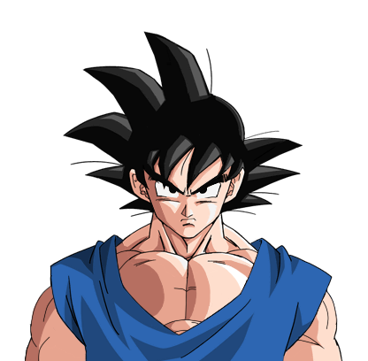
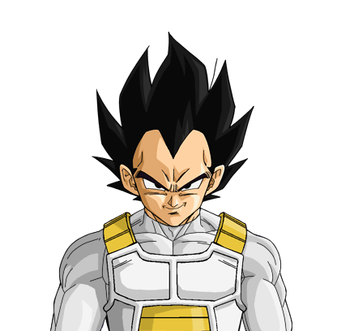

Son Goku (孫そん悟ご空くう Son Gokū), born Kakarot (カカロット Kakarotto, lit. "Cacarrot"), is the main protagonist of the Dragon Ball metaseries. Goku is a Saiyan originally sent to Earth as an infant. However, an accident alters his memory, allowing him to grow up to become Earth's greatest defender and the informal leader of the Dragon Team. He constantly strives and trains to be the greatest warrior possible, which has kept the Earth and the universe safe from destruction many times.[15]
Vegeta (ベジータ Bejīta), more specifically Vegeta IV (ベジータ四世 Bejīta Yonsei, lit. "Vegeta the Fourth")[5], recognized as Prince Vegeta (ベジータ王子 Bejīta Ōji) is the prince of the fallen Saiyan race and one of the major characters of the Dragon Ball series. He is the eldest son of Vegeta III, the older brother of Tarble, the husband of Bulma, the father of Trunks and Bulla, and the ancestor of Vegeta Jr. Alongside Goku, Gohan, Bulma, Krillin, and Piccolo, he is easily one of the most prominent characters in the series, receiving more character development after being introduced than a number of other characters.